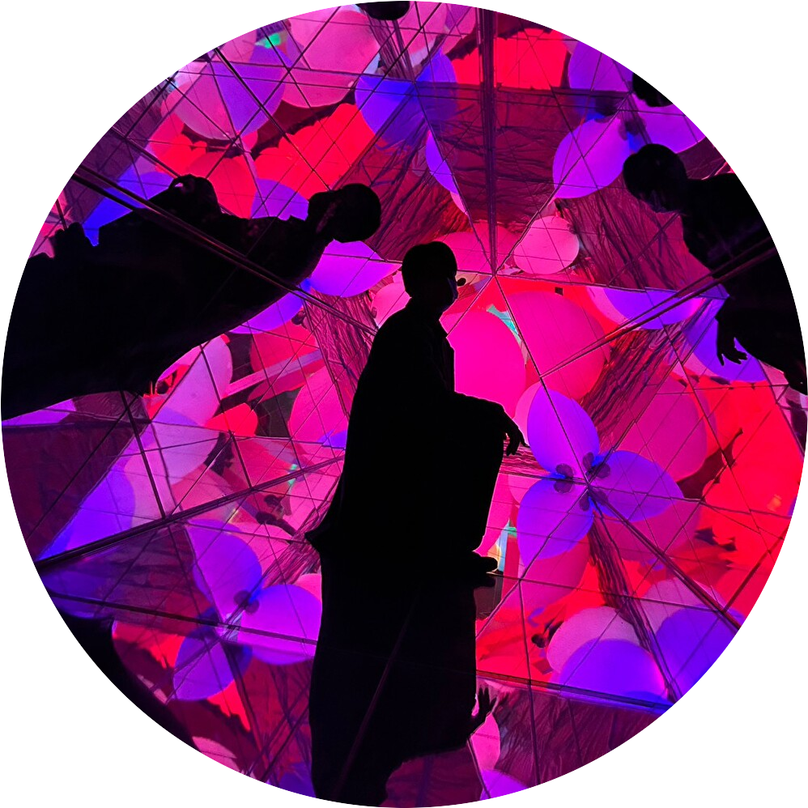
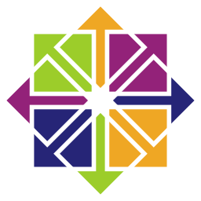

Profile

NAME：Shoma.Hasegawa
岐阜県出身。2000年10月生まれ。
中学生時にPCに興味を持ち、自作PCの作成やラズベリーパイに触れるようになる。
上記の経緯から次第にプログラミングにも意識が向くようになり、より専門的な勉強をしようと高専の情報工学科に入学。高専生時代は自然言語処理の研究を主として、勉学に励む。
卒業後はクラウドインテグレーターの企業に入社し、主にローコードによる業務アプリケーションの開発に従事。
その後、上記企業を退社。退社後は若いうちに色々なところに行き様々な経験をしたいと考え、株式会社ダイブの派遣スタッフに登録。日本の各地を巡りながらリゾートバイトという形態で農業・テーマパークスタッフ・カメラマンなど多くの業種を経験し今に至る。
Skills
Language


Others





License
- 基本情報技術者試験
- ウェブデザイン技能検定 2級
- 第三級アマチュア無線技士資格
- Microsoft Certified: Power Platform Fundamentals
- Microsoft Certified: Azure Data Fundamentals